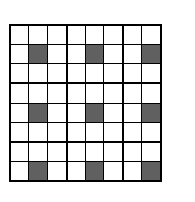

Problem
What is the minimum number of squares that need to be marked on a chessboard, so that:
1) There are no horizontally, vertically or diagonally adjacent marked squares.
2) Adding any single new marked square breakes rule 1.
Solution
Divide the square into 9 parts (see the diagram). Each part must contain one square, else this square can be added without breaking rule 1.

E.g the nine black squares on the diagram obey both rules.
Answer
9 squares